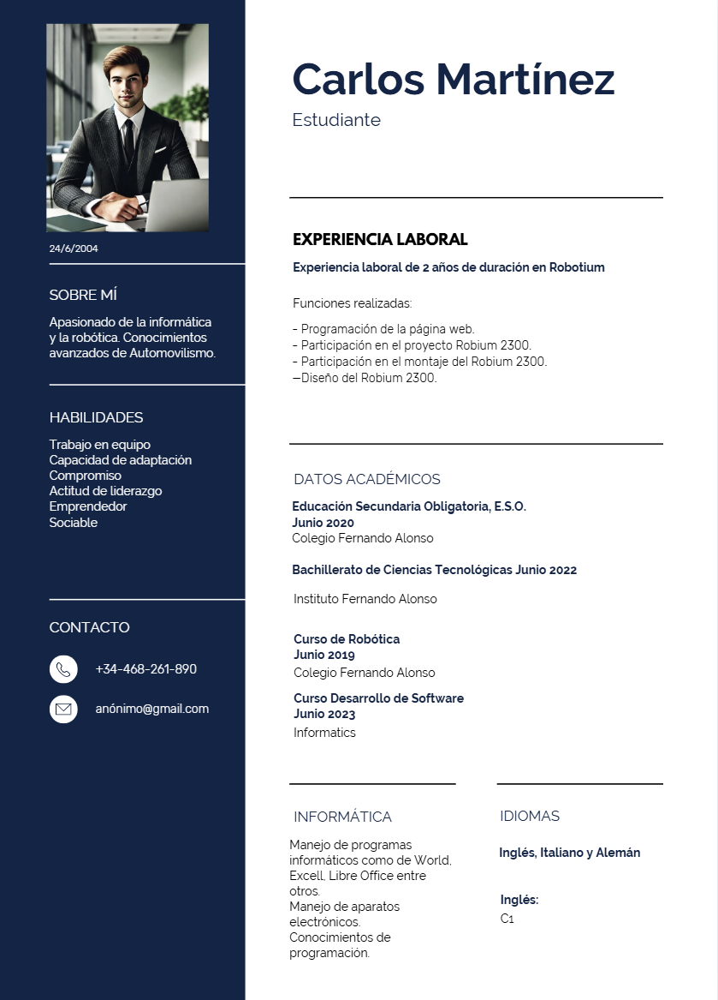

Mi nombre es Carlos Martínez. Tengo 20 años y estudio en la Universidad Francisco de Vitoria. Soy una persona que le gusta mucho el deporte, tanto jugarlo como verlo. Mi deporte favorito es el fútbol, pero soy un apasionado de la F1. Es un deporte que lleevo viendo desde muy pequeño y siempre me ha gustado mucho, tanto que en esta página web he dejado un hueco para poder hablar de este deporte. Soy una persona activa que le gusta mucho entrenar en el gimnasio. Me gusta pasar tiempo en familia y con amigos, ya que disfruto muchos estos momentos. Me gusta mucho la informática, y por eso Ingeniería Informática es mi carrera, la uqe yo he escogido. Me gusta mucho la idea de resolver varios problemas mediante la informática. Me gusta mucho la robótica y programar en diferentes lenguajes. Por ejemplo, realizar esta página web me gusta y me motiva. A continuación voy a compartir con vosotros mi Curriculum para que podáis conoccer más.
Este es mi curriculum:
